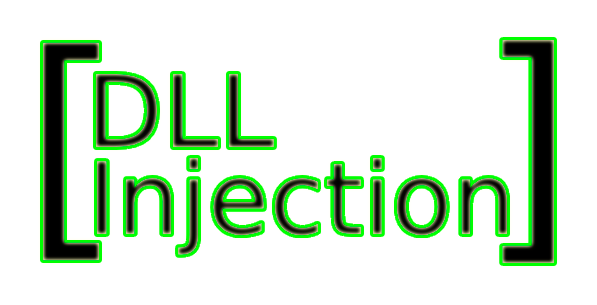

> I wrote a Batch script which would run Powershell
commands, these commands would inject a DLL
into memory. This would evade static detection
as well as executing a payload without the
payload needing to be written to disk.
> I used: PowerShell, Windows API,
Process Hollowing, and Batch Scripting.
>How did it work?
- The DLL injection leveraged process hollowing
to inject the payload into a benign,
non-suspicious Windows process, making detection
extremely difficult by bypassing traditional
anti-virus tools.
- A batch file was used to automate the injection,
which would then pull a RAT (Remote Access Tool)
from an virtual private server and execute it on
the victim machine, ensuring the payload remained
fully undetectable (FUD).
- Persistence was maintained through the injected
payload itself, which would run during startup,
ensuring continued access even after reboots.
> Testing & Challenges:
- The primary challenge was ensuring the payload
was FUD, as scanning it with any malware
detection tool would generate signatures
and potentially flag the file.
So instead, I tested the payload on multiple
Windows virtual machines and virtual private
servers to test the likelyhood of detetction.
> Practical Applications & Thoughts:
- This type of malware injection could be used in
targeted attacks, such as compromising corporate
systems in industries like insurance, where an
attacker could remotely control employees'
systems and exfiltrate sensitive data.
- It provided valuable insights into the dangers
of seemingly harmless files, significantly
increasing my awareness of the importance of
securing systems and myself against such
attacks in the future.
Type cd .. to return to the project list.
root
@
185.199.111.1
:/
dll_injection$